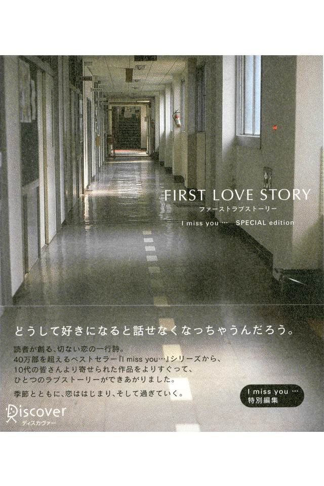

| FIRST LOVE STORY I miss you... | |
| Unknown | |
| 株式会社ディスカヴァー・トゥエンティワン (2003) | |

FIRST LOVE STORY
ファーストラブストーリー
午前八時二十五分。
校門目の歩道橋。
駆け抜けていくあなたを見たくて、
今日もわたしは遅刻です。
きょうはあなたに会えて、
昨日よりあなたが好きになりました。
明日はあなたに会えなくて、
今日よりあなたが好きになるでしょう。
あなたと目が合った。
これで二時間分のシアワセの充電。
わたしの特技。
どこからでもあなたを見つけられること。
話しかけてくれるわけないけど、
話しかけてくれないかなあ。
きょうはあなたのこと見ることができなかった。
でも、あなたのこと、たくさん×２考えてた。
それだけでドキドキたまらなかった。
廊下であなたとすれ違う。
わたしのドキドキ、聞こえてないよね。
クラス替え。
真っ先にあなたの名前を探す。
いっしょのクラスになってほしいような、怖いような。
わたしの気持ちに気づいてほしいような、
気づかれるのが怖いような。
あなたが近くにいるだけで、自然に声が高くなる。
休み時間、あなたがわたしの椅子に座るたび、ドキ×２してる。
髪をかき上げるクセ。ちょっと真似してみた。
身長や体重の数値さえ、あなたのものだと愛しく思える。
あなたがわたしのこと好きだって噂が流れた。
信じちゃっていいのかな。
廊下であなたとすれ違う。
ふっと目をそらす自分が哀しい。
「おはよう！」っていえばいいのに。
どうして好きになると話せなくなっちゃうんだろう。
気づいてるくせに何も言ってくれない彼。
何も言えないわたし。
ほんの少しの勇気がなくて、ほんの少しの変化も起きない。
あなたの声を聞くと、ほっとする。
なのになんで、こんなに悲しいの？
あなたのことが好き。
ただそれだけなのに、
どうして、こんなにつらいんだろう？
あなたが微笑むと、すごく嬉しい。
けど、微笑みかけているのが、
わたしじゃないのが、すごく悲しい。
どこまできれいになったら、
どこまでかわいくなったら、
わたしを選んでくれますか？
追いかけた背中。言えなかった想い。
ねえ、人魚姫、あなたは幸せだった？
わたしには声があるんだよ。
でも、好きって言えなかったの。
失いたくなかった。
離れたくなかった。
幸せを守りたかった。
でも、こわしちゃった･･････
恋は勇気だと思う。
ほんの少しの勇気だと思う。
勇気をください。チャンスをください。一回だけの。
今日、恋愛ってそんなにキレイじゃないって知った。
「おれ、好きな人いるんだ」
それがわたしかもなんて、
なんてばかなこと考えていたんだろう。
わたしじゃないんだ、わたしじゃだめなんだ。
心の中で繰り返す。
恋してた。わたしだけが恋してた。
友だちのままでいたくなかった。
友だちのままでいればよかった。
好きになった人からは、いつも好きになってもらえない。
あなたとの距離、
世界でいちばん長い一メートル。
どんなに好きでもだめなときがあることを知ってしまった秋。
でも、いつかきっと、って思っちゃうんだ。
いつかなんてあるわけないのに。
神さま、わたし勇気出せたのに、
どうしてごほうびくれなかったの？
夜、バスの中であなたを見かけた。
声をかけることもできずに、
ただ、ガラスに映る横顔を見つめてた。
時が経てば忘れられると思った。
でも、時が経つほど好きになるの。
もう忘れないとだめですか？
ずっと好きでいちゃだめですか？
今日もひとりになりたくて、公園へ行きました。
でも、本当はあなたに見つけてほしかった。
考えても考えても、
今でもやっぱりあなたが好きです。
あのとき、もっとちゃんと言えていれば、
少しは変わっていたかもしれない。
少しだけ、あと少しだけ話せたら、
何かが変わっていたかもしれない。
はじめてあなたの隣を歩いた日。
肩がちょっと触れるだけで、胸が痛かった。
伝えたかった言葉。
あめ玉といっしょに飲み込んで、
喉にとけて
貼りついたまま。
笑顔で手を振った反対ホームで、
気持ちさらけ出す勇気もなく、泣いていたわたし。
ドラマのようなことを夢見ていた、わたしがばかだった。
あんたなんか大嫌い。心の底から大嫌い。
あんたなんか、どっかいっちゃえ！
ちくしょー！ ちくしょー！
ちくしょー！ ちくしょー！
ちくしょー！ ちくしょー！
ちくしょー！ ちくしょー！
ちくしょー！ ちくしょー！
ちくしょー！ ちくしょー！
ちくしょー！ ちくしょー！
ちくしょー！ ちくしょー！
ちくしょー！ ちくしょー！
ちくしょー！ ちくしょー！
ちくしょー！ ちくしょー！
ちくしょー！ ちくしょー！
ちくしょー！ ちくしょー！
ちくしょー！ ちくしょー！
ちくしょー！ ちくしょー！
ちくしょー！ ちくしょー！
ちくしょー！ ちくしょー！
ちくしょー！ ちくしょー！
ちくしょー！ ちくしょー！
空を見た。まぶしくて涙が出た。
夢のような恋をしたかった。でも、夢は夢だった。
ありがとう。今日笑ってくれて。
それだけでもう十分。
泣いて泣いて泣きまくったら、
顔を洗って水を飲もう。
そしてまた、新しい自分を始めるんだ。
地図で見ました、あなたが行く高校。
あまりにも遠すぎて、泣いてしまいました。
あなたがそこにいるだけで幸せでした。
目が合うだけで幸せでした。
話せるだけで幸せでした。
彼はお日さまみたいに優しい人、
だったからかな。
私だけのものにならなかったの。
いつかまた会えるといいよね。
うそ、いますぐ。
楽しい友だち。
笑い転げる毎日。
それでもそれでも、
あなたがそばにいてくれたら、
そう思う
今日この頃です。
安田君、今どこにいますか？
電車の中ですか？
今日は寒いね。
安田君、今何しています？
何時に家を出るの？
何時に学校に着くの？
帰りは遅いの？
好きな人、いるんですか？
七夕、流れ星、初詣......わたしのお祈りはただ一つ。
あなたに会いたいです。
三年Ｃ組、斜め前。
思い出すたび、遠くなる。
大きな背中が遠くなる。
おとといも昨日も、
そして多分今日も、
ずっとあなたのこと考えてた。
でも、明日もあさっても、
絶対しあさってだって、
あなたのこと考えない。
だって明日でわたし、
十六歳になるんだもん。
がんばれ、わたし。
編集後記
本書は小社の大人気シリーズ『アイミスユー』の特別編です。シリーズ六冊およびシリーズ前身の『別れたあの人への伝言』のなかから、十代の方から寄せられた作品を厳選・再構成して、ひとつの恋物語のように仕立ててみました。青春のただ中で生まれてくる"小さな恋のつぶやき"と、原田奈々さんによるみずみずしい写真ともコラボレーションを、存分に味わっていただければと思います。
この本を読まれている皆さんのなかには、現役真っ盛りの十代の方もいれば、もう十代なんて遠い昔、とおっしゃる方もおられるかもしれません。「初恋」ときいて思いうかべることも、人それぞれでしょう。私自身は、中学高校とも残念ながら（？）共学ではなかったこともあって、あまり恋愛とは縁のない十代送ったような気がします。では興味がなかったかというと、（もちろん）そんなことはなく、文化祭や予備校などで異性と知りあうたび、勝手に胸をときめかせたりしたものです。かれこれもう十年以上も前のことになりますが、それでも、相手の態度に一喜一憂したときのこととか、いいなと思っている人の前ではなぜかドキドキしてしまう感じなど、今でも、ついこないだのことのように、鮮明に憶えています。
『アイミスユー』シリーズは、皆さんのご応募によって成り立っています。本書をはじめて手にされた方も、ぜひ同封のカードにあなたの"恋ごころ"をしたためて、編集部までお送りください。十代の方はもちろん、かつて十代だった方や男性の方からのご投稿も、心よりお待ちしております。紙面の都合上、ご応募作品のすべてを掲載できないのが残念ですが、毎回、すべてのカードに編集部が必ず目をとおしています。
最後になりましたが、本シリーズにこれまで原稿をお寄せくださった方々に、心より厚くお礼申しあげます。次回、アイミスユー７でお会いしましょう。 編集部
FIRST LOVE STORY ファーストラブストーリー
２００３年８月10 日 初版第１刷発行
２０１３年３月22 日 電子書籍版発行
発行者 干場弓子
発行所
株式会社ディスカヴァー・トゥエンティワン
〒１０２―００９３ 東京都千代田区平河町２―16 ―１
TEL 03―3237―8321(代表)
FAX 03―3237―8323
ツイッター @discover21
Facebook公式ファンページ
http://www.facebook.com/Discover21jp
本作品の全部あるいは一部を無断で複製・転載・公衆送信することを禁止します。また、有償・無償にかかわらず本作品を第三者に譲渡することはできません。
ISBN978―4―88759―266―7
(c)Discover21, Inc., 2012.